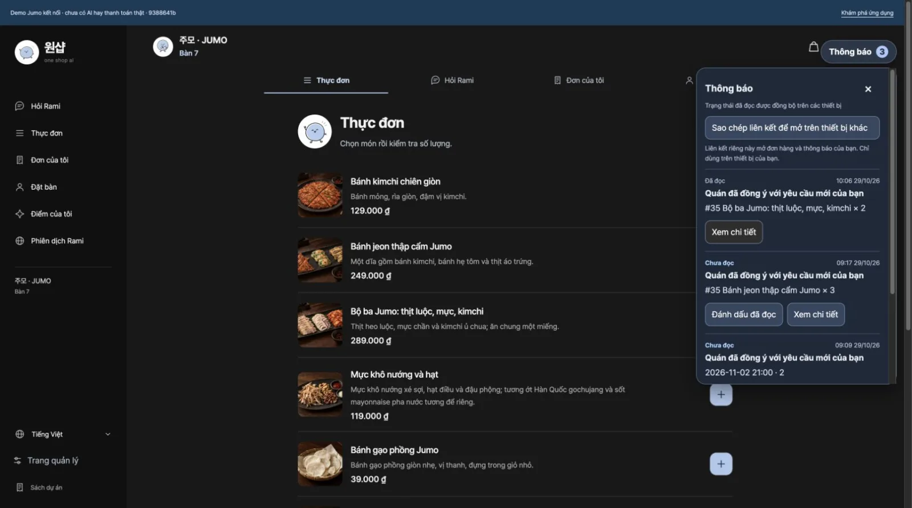
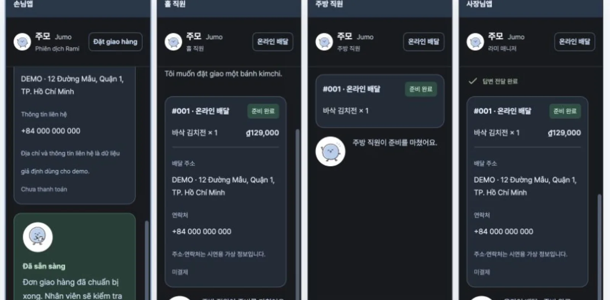
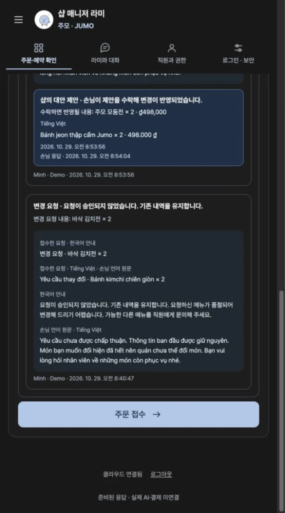
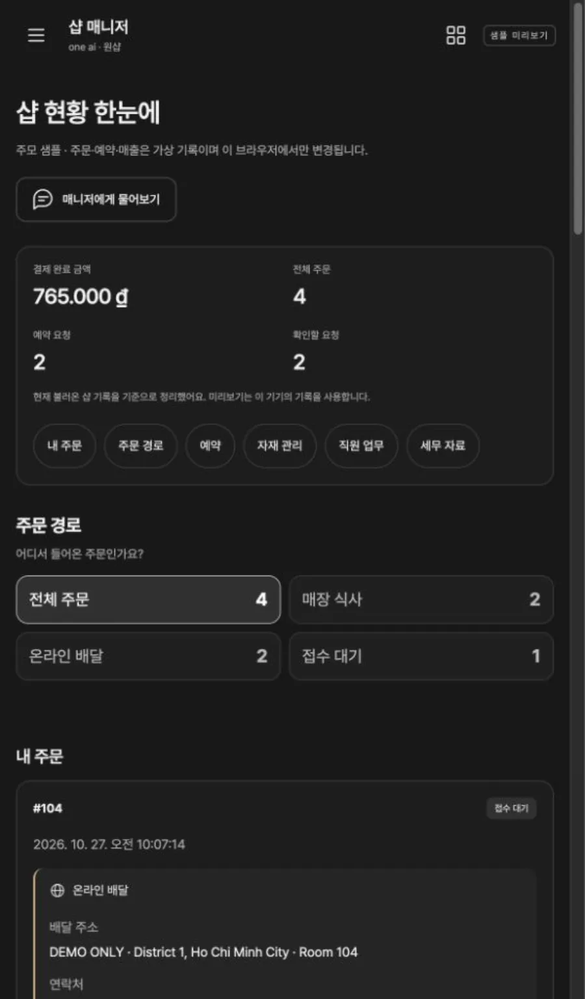

어떻게 만들었나
말이 달라도 주문은 쉽게
손님은 테이블에 붙은 QR을 찍고 자기 언어를 고릅니다. 메뉴 이름과 설명, 라미의 안내가 그 언어로 바뀌어, 처음 온 외국인 손님도 직원을 부르지 않고 메뉴를 담고 테이블 번호를 확인한 뒤 주문을 보냅니다.
주문 직전에는 매장 식사인지 온라인 배달인지 고릅니다. 배달이면 주소와 연락처가 함께 넘어가, 매장 쪽에서 다시 물어볼 일이 줄어듭니다.

한 번의 주문이 네 화면으로
손님이 보낸 주문은 서버에 저장되고 손님, 홀, 주방, 사장님 화면에 같은 순간에 나타납니다. 홀은 접수와 서빙을, 주방은 메뉴와 수량, 조리 상태를 보고, 사장님은 전체 흐름을 한눈에 확인합니다.
역할마다 볼 수 있는 것과 할 수 있는 일이 다르고, 서버가 그 권한을 확인합니다. 그래서 같은 주문을 여러 사람이 동시에 다뤄도 상태가 엇갈리지 않습니다.

변경과 취소, 대안까지 기록으로
손님이 메뉴나 수량, 예약 시간을 바꾸거나 취소를 요청하면 홀이나 사장님이 승인합니다. 받아들이기 어려우면 사유를 적어 거절하고 다른 메뉴나 시간을 대안으로 제안할 수 있습니다.
요청과 답은 손님이 고른 언어와 한국어로 함께 남아, 나중에 누가 무엇을 언제 정했는지 처리 기록에서 바로 확인합니다.

사장님은 대화로 샵을 꾸립니다
직접 샵을 등록하는 연결 모드에서 사장님은 매니저 라미와 대화하며 상호, 주소, 공개 연락처와 SNS를 입력하고 메뉴와 매장 사진을 올립니다. 샵 현황 화면은 매장 식사와 온라인 배달, 접수 대기 주문을 나눠 보여 줍니다.
사장님 앱은 샵 비밀번호로만 열리고, 직원은 역할별 링크로 들어옵니다. AI 답변은 아직 준비된 시나리오이며 실제 AI 모델과 온라인 결제, POS는 연결하지 않았습니다.
